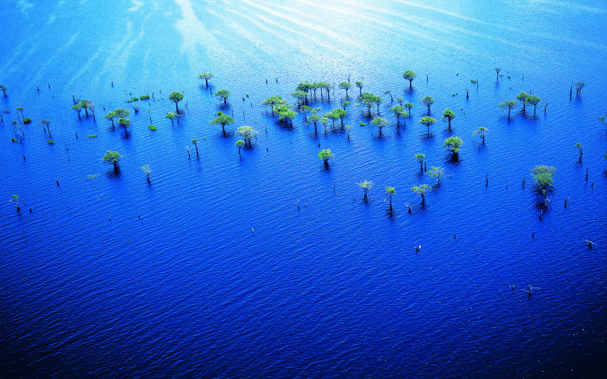
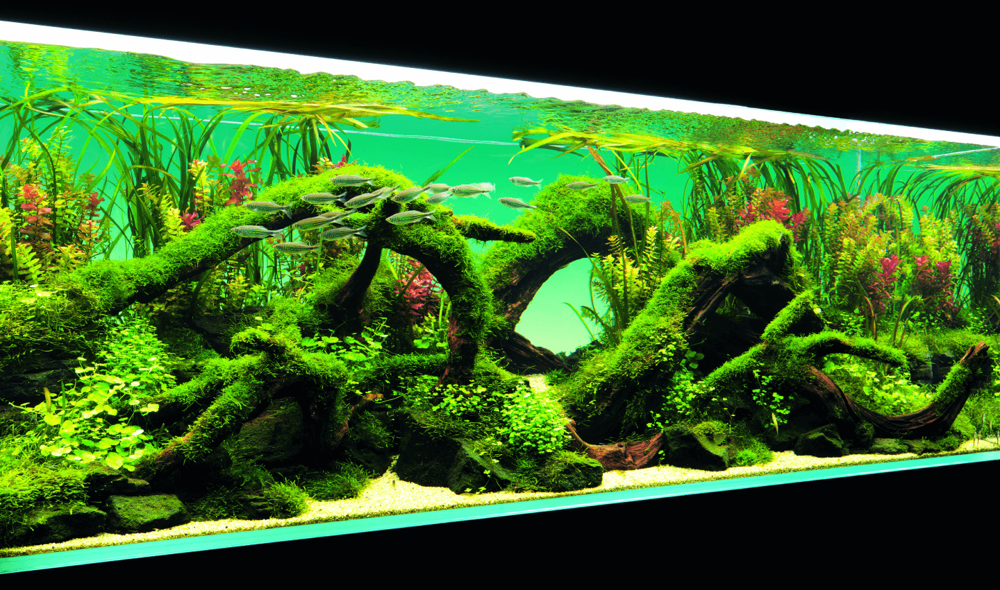

DISCOVER OUR INSPIRATION
Amano Takashi, the founder of Nature Aquarium. His career encompasses a
wide range of activities as an aquascape creator, the CEO of Aqua Design
Amano Co., Ltd. and an ecology & landscape photographer., born in
Niigata, Japan in 1954. Since 1975, Amano has visited tropical
rainforests in Amazon, Borneo and West Africa and pristine forests in
Japan, and he worked on a series of photos focusing on "untouched
nature" with his large-format cameras. He captures minute details of
nature found at site on extra large size films (up to 8x20 inches). His
works have been made famous internationally through several exhibitions
and publications.
Amano Takashi, the founder of Nature Aquarium. His career encompasses a
wide range of activities as an aquascape creator, the CEO of Aqua Design
Amano Co., Ltd. and an ecology & landscape photographer., born in
Niigata, Japan in 1954. Since 1975, Amano has visited tropical
rainforests in Amazon, Borneo and West Africa and pristine forests in
Japan, and he worked on a series of photos focusing on "untouched
nature" with his large-format cameras. He captures minute details of
nature found at site on extra large size films (up to 8x20 inches). His
works have been made famous internationally through several exhibitions
and publications.


Nature Aquarium recreates an ecosystem that is found in nature by
growing aquatic plants to make a favorable environment within an
aquarium tank and keeping animals such as fish and shrimp together with
plants. It is a unique world created by the marriage of beauty of nature
and a harmonious environment. A beautiful aquascape where healthy grown
aquatic plants thrive and colorful tropical fish swim soothes our mind.
The origin of Nature Aquarium creation is nothing else but Nature.
Amazonian tropical rainforest with the large river, lush greenery, and
rich flora and fauna such as tropical fish are one of the origins of
Nature Aquarium. The rainy season in the Amazon and endless tropical
rainforest is submerged by swollen rivers. witch seamlessly circulates
an enormous number of Lives.
Still Water Aquatics
Founded in 2004, is a leading Aquatic Eco-System (Aquarium and Pond)
design, consulting and commissioning company based out of Bangalore,
India. SWA are leading experts in Nature Aquariums, Customised Fish
Tanks, Luxury Aquarium Designs, Koi and Lily Ponds Installation and
Maintenance.
At SWA, one can find abundance of knowledge,
expertise, network and quality oriented delivery commitments. SWA has
created and set very high standards in India’s Aquarium industry with
their highly successful product and service offerings in association
with Aqua Design Amano co. ltd (ADA), Japan. SWA is the sole distributor
for ADA goods in India, Bangladesh, Nepal, Srilanka and Maldives. Our
understanding of design and aesthetics enables us to translate a
client’s dream into an exotic living and ever-changing artwork. We
provide our customers with an ideal solution with ease of maintenance.